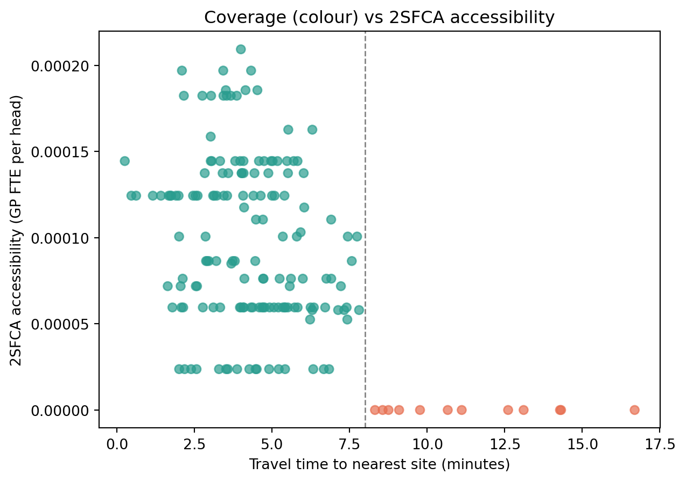
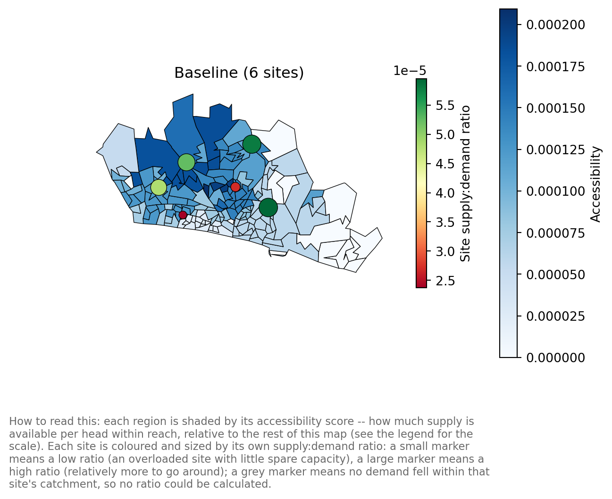
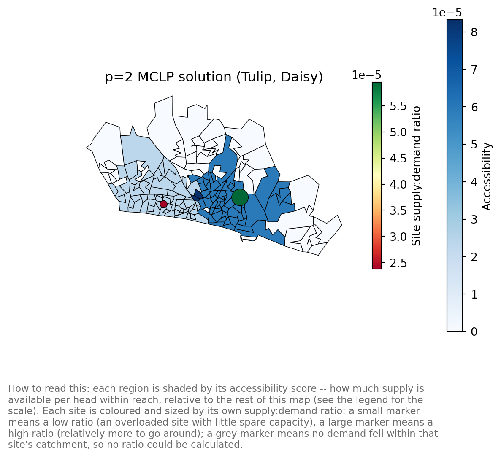

import geopandas as gpd
from lokigi.site import SiteProblem
sites_gdf = gpd.read_file("../../../sample_data/brighton_sites_named.geojson")
# Illustrative GP staffing (FTE) -- made up for demonstration, since the
# sample dataset has no real capacity data.
sites_gdf["gp_fte"] = [4, 2, 8, 3, 5, 6]
problem = SiteProblem()
problem.add_demand(
"../../../sample_data/brighton_demand.csv",
demand_col="demand",
location_id_col="LSOA"
)
problem.add_sites(
sites_gdf,
candidate_id_col="site"
)
problem.add_travel_matrix(
travel_matrix_df="../../../sample_data/brighton_travel_matrix_driving_named.csv",
source_col="LSOA",
from_unit="seconds",
to_unit="minutes"
)
problem.add_region_geometry_layer(
"https://github.com/hsma-programme/h6_3d_facility_location_problems/raw/refs/heads/main/h6_3d_facility_location_problems/example_code/LSOA_2011_Boundaries_Super_Generalised_Clipped_BSC_EW_V4.geojson",
common_col="LSOA11NM"
)Two-Step Floating Catchment Area (2SFCA) Accessibility
Binary threshold coverage (see the coverage metrics example) answers “is this region within X minutes of a site?” – but it treats every region within the threshold identically, regardless of how many other regions are competing for the same site’s supply.
The two-step floating catchment area (2SFCA) method fixes that. For each site, it computes a supply-to-demand ratio over everyone within reach of it (step 1), then for each demand region, sums the ratios of every site reachable from it (step 2). Two regions with the same travel time to their nearest site can end up with very different accessibility if one of them shares that site with far more competing demand, or has fewer other sites within reach.
two_step_floating_catchment() is available on both SiteProblem (scoring any set of sites directly, with no solve() required) and SiteSolutionSet (scoring one chosen solution’s selected sites) – this example mostly uses the former, since it’s useful even before optimising anything. With no site_names/site_indices, it scores every registered candidate site; pass the subset you want explicitly (e.g. only the sites already open) if your candidate pool also includes proposed sites that aren’t built yet.
Setting up the problem
Same demand, sites, travel matrix and region geometry as the coverage metrics example, so the two examples are directly comparable. 2SFCA additionally needs a supply figure per site – e.g. GP full-time-equivalent staff, beds, or weekly appointment slots. The Brighton sample dataset has no real staffing data, so we add an illustrative gp_fte column here for demonstration; supply_col is named at call time rather than registered via add_sites(), so the same problem could equally be scored under a different supply definition (e.g. beds) without re-adding sites.
Baseline accessibility – no solve() required
two_step_floating_catchment() can score all six candidate sites directly, with no solve() needed. Here every candidate genuinely represents a site that’s already open, so “all six” and “the current network” happen to coincide – that’s a property of this dataset, not something the method assumes; if your own candidate pool also includes proposed-but-unbuilt sites, pass site_names/site_indices for just the open ones. We use an 8-minute catchment_size, matching the coverage example’s threshold_for_coverage so the two are comparable.
region_accessibility = problem.two_step_floating_catchment(
supply_col="gp_fte",
catchment_size=8,
)
region_accessibility.sort_values("accessibility").head()| accessibility | n_sites_in_catchment | demand | |
|---|---|---|---|
| LSOA | |||
| Brighton and Hove 027F | 0.0 | 0 | 2323 |
| Brighton and Hove 002B | 0.0 | 0 | 2665 |
| Brighton and Hove 033A | 0.0 | 0 | 929 |
| Brighton and Hove 033E | 0.0 | 0 | 1406 |
| Brighton and Hove 033B | 0.0 | 0 | 1035 |
accessibility is GP FTE per head available within reach of each region (here, ordered lowest-first); n_sites_in_catchment is how many of the six sites are within 8 minutes; demand is echoed from add_demand() for weighting downstream.
Where 2SFCA disagrees with coverage
To compare directly against binary coverage, we evaluate the same six-site network with evaluate_single_solution_single_objective() and an 8-minute threshold_for_coverage, then join its per-region min_cost/within_threshold columns to the accessibility table above.
evaluated = problem.evaluate_single_solution_single_objective(
objective="p_median",
site_names=sites_gdf["site"].tolist(),
threshold_for_coverage=8,
)
comparison = (
evaluated.show_result_df()
.set_index("LSOA")[["min_cost", "within_threshold"]]
.join(region_accessibility[["accessibility"]])
)
comparison.head()| min_cost | within_threshold | accessibility | |
|---|---|---|---|
| LSOA | |||
| Brighton and Hove 027E | 7.404833 | True | 0.000060 |
| Brighton and Hove 027F | 8.318500 | False | 0.000000 |
| Brighton and Hove 027A | 6.840000 | True | 0.000024 |
| Brighton and Hove 029E | 6.328667 | True | 0.000024 |
| Brighton and Hove 029D | 5.216667 | True | 0.000024 |
covered = comparison[comparison["within_threshold"]]
lowest_access = covered.sort_values("accessibility").iloc[0]
highest_access = covered.sort_values("accessibility").iloc[-1]
lowest_access, highest_access(min_cost 6.84
within_threshold True
accessibility 0.000024
Name: Brighton and Hove 027A, dtype: object,
min_cost 3.995833
within_threshold True
accessibility 0.000209
Name: Brighton and Hove 011D, dtype: object)Both of these regions are “covered” under the binary metric (min_cost < 8 minutes), but their 2SFCA accessibility differs by almost 8.8x: Brighton and Hove 027A sits at 6.84 minutes with an accessibility of 0.000024 GP FTE per head, while Brighton and Hove 011D is closer still (4.00 minutes) and far better served, at 0.000209 GP FTE per head. Coverage alone cannot distinguish these two cases; 2SFCA can. 153 of the 165 regions are “covered” at this threshold, so this is a genuine, common case, not an edge case.
Visualising the disagreement
Plotting every region’s travel time to its nearest site against its 2SFCA accessibility, coloured by whether it meets the coverage threshold, makes the blind spot visible directly: points to the left of the dashed line are all “covered” by the binary metric, yet spread across a wide range of accessibility.
import matplotlib.pyplot as plt
fig, ax = plt.subplots(figsize=(7, 5))
colors = comparison["within_threshold"].map({True: "#2a9d8f", False: "#e76f51"})
ax.scatter(comparison["min_cost"], comparison["accessibility"], c=colors, alpha=0.7)
ax.axvline(8, color="grey", linestyle="--", linewidth=1)
ax.set_xlabel("Travel time to nearest site (minutes)")
ax.set_ylabel("2SFCA accessibility (GP FTE per head)")
ax.set_title("Coverage (colour) vs 2SFCA accessibility")
plt.show()
Every green point is “covered” by the binary metric, but they are not equally well served – some sit near the bottom of the accessibility range because they share a popular site with a lot of competing demand.
Inspecting the supply side
return_site_ratios=True also returns the step-1 per-site table, useful for finding which site is driving an implausible regional score.
_, site_ratios = problem.two_step_floating_catchment(
supply_col="gp_fte",
catchment_size=8,
return_site_ratios=True,
)
site_ratios.sort_values("ratio")| supply | catchment_demand | n_regions_in_catchment | ratio | |
|---|---|---|---|---|
| site | ||||
| Daisy (Site 4) | 3 | 126472.0 | 66 | 0.000024 |
| Begonia (Site 2) | 2 | 74219.0 | 44 | 0.000027 |
| Dahlia (Site 1) | 4 | 83042.0 | 47 | 0.000048 |
| Snowdrop (Site 6) | 6 | 114238.0 | 71 | 0.000053 |
| Daffodil (Site 5) | 5 | 86171.0 | 50 | 0.000058 |
| Tulip (Site 3) | 8 | 134366.0 | 59 | 0.000060 |
A low ratio means that site’s supply is spread thin over a lot of catchment demand; a high one means it is relatively uncontested. A region’s accessibility is the sum of the ratios of every site it can reach, so being near a low-ratio site (even alone) can leave a region worse off than being near several higher-ratio ones.
Scoring a proposed (smaller) solution
SiteSolutionSet.two_step_floating_catchment() takes the same solution-selection arguments as site_allocation_summary(), so a chosen solution’s accessibility can be compared against the six-site baseline above.
solutions = problem.solve(
objectives="mclp",
p=2,
threshold_for_coverage=8
)
two_site_accessibility = solutions.two_step_floating_catchment(
supply_col="gp_fte",
catchment_size=8,
solution_rank=1,
)
two_site_accessibility.sort_values("accessibility").head()| accessibility | n_sites_in_catchment | demand | |
|---|---|---|---|
| LSOA | |||
| Brighton and Hove 027F | 0.0 | 0 | 2323 |
| Brighton and Hove 003C | 0.0 | 0 | 300 |
| Brighton and Hove 011B | 0.0 | 0 | 1021 |
| Brighton and Hove 011E | 0.0 | 0 | 1256 |
| Brighton and Hove 004D | 0.0 | 0 | 990 |
Dropping from six sites to the two MCLP selects (Tulip and Daisy) more than triples the number of regions with no site in catchment_size at all – from 12 out of 165 to 42 – and roughly triples typical accessibility scarcity: mean accessibility falls from about 9.2e-05 to about 3.1e-05 GP FTE per head. This tracks the conservation property noted in the method’s docstring – summed demand-weighted accessibility equals total supply among sites with a non-empty catchment (28 GP FTE across all six sites vs. 11 across just Tulip and Daisy) – so a smaller network has less total supply to spread around, on top of any individual region losing its nearest site outright.
Mapping accessibility
plot_accessibility() puts the two tables above on a map directly: a region choropleth of accessibility, overlaid with site markers coloured and sized by their step-1 ratio (red and small for an overloaded site, green and large for a relatively uncontested one). Like two_step_floating_catchment() itself, it needs no solve() – called on problem, it scores every candidate site; called on a SiteSolutionSet, it scores that solution’s selected sites.
problem.plot_accessibility(
supply_col="gp_fte",
catchment_size=8,
add_basemap=False,
title="Baseline (6 sites)",
);
solutions.plot_accessibility(
supply_col="gp_fte",
catchment_size=8,
add_basemap=False,
title="p=2 MCLP solution (Tulip, Daisy)",
);
With six sites, Tulip (the highest-ratio, largest green marker in the site-ratio table above) sits in an area that already reads as high-accessibility on the map. Dropping to the two-site solution visibly shrinks the high-accessibility area around it, and Daisy – the lowest-ratio site – now has to cover a much wider area alone, consistent with the mean-accessibility drop already noted above.
interactive=True returns the same two layers as a Folium map, with a tooltip on every region and site.
Enhanced 2SFCA (distance decay)
A single hard catchment_size treats a site 1 minute away identically to one 8 minutes away, as long as both are under the cutoff, and identically to “unreachable” for a site 9 minutes away. Enhanced 2SFCA (E2SFCA, Luo & Qi 2009) softens this with step-decay bands: distance_decay=[(upper_bound, weight), ...]. A closer band counts for more, and the last band’s upper_bound becomes the effective catchment edge – catchment_size=8 is exactly the single-band case distance_decay=[(8, 1.0)].
The bands below (breaks at 4/8/12 minutes) are scaled to match this example’s existing 8-minute baseline, not copied from the paper. Luo & Qi’s own published zones are 0-10/10-20/20-30 minutes, with two named weight sets: [(10, 1.0), (20, 0.68), (30, 0.22)] (“weight set 1”, slower decay) and [(10, 1.0), (20, 0.42), (30, 0.09)] (“weight set 2”, their preferred, sharper decay) – real published values, not arbitrary illustrations, used elsewhere in this library’s own docstrings.
region_step_decay = problem.two_step_floating_catchment(
supply_col="gp_fte",
distance_decay=[(4, 1.0), (8, 0.6), (12, 0.25)],
)
region_step_decay.sort_values("accessibility").head()| accessibility | n_sites_in_catchment | demand | |
|---|---|---|---|
| LSOA | |||
| Brighton and Hove 033E | 0.0 | 0 | 1406 |
| Brighton and Hove 033A | 0.0 | 0 | 929 |
| Brighton and Hove 009E | 0.0 | 0 | 2457 |
| Brighton and Hove 033B | 0.0 | 0 | 1035 |
| Brighton and Hove 009A | 0.0 | 0 | 2883 |
Widening the catchment out to 12 minutes (with decreasing weight) reaches more sites per region than the hard 8-minute cutoff did, but each further-away site now contributes less than a close one instead of counting the same as one right next door.
A continuous alternative is Gaussian decay (Dai 2010): rather than discrete bands, weight falls off smoothly with distance, reaching exactly 0 at the truncation radius (catchment_size inside the spec) rather than dropping in steps.
distance_decay={"method": "gaussian", "catchment_size": 12, "bandwidth": 6}region_gaussian = problem.two_step_floating_catchment(
supply_col="gp_fte",
distance_decay={"method": "gaussian", "catchment_size": 12, "bandwidth": 6},
)
region_gaussian.sort_values("accessibility").head()| accessibility | n_sites_in_catchment | demand | |
|---|---|---|---|
| LSOA | |||
| Brighton and Hove 033E | 0.0 | 0 | 1406 |
| Brighton and Hove 033A | 0.0 | 0 | 929 |
| Brighton and Hove 009E | 0.0 | 0 | 2457 |
| Brighton and Hove 033B | 0.0 | 0 | 1035 |
| Brighton and Hove 009A | 0.0 | 0 | 2883 |
import pandas as pd
pd.DataFrame(
{
"hard cutoff (8 min)": [
region_accessibility["accessibility"].mean(),
(region_accessibility["accessibility"] == 0).sum(),
],
"step decay (bands to 12 min)": [
region_step_decay["accessibility"].mean(),
(region_step_decay["accessibility"] == 0).sum(),
],
"gaussian decay (radius 12 min)": [
region_gaussian["accessibility"].mean(),
(region_gaussian["accessibility"] == 0).sum(),
],
},
index=["mean accessibility", "regions with zero accessibility"],
)| hard cutoff (8 min) | step decay (bands to 12 min) | gaussian decay (radius 12 min) | |
|---|---|---|---|
| mean accessibility | 0.000092 | 0.00009 | 0.000092 |
| regions with zero accessibility | 12.000000 | 5.00000 | 5.000000 |
The plain mean isn’t quite the right thing to compare here – the demand-weighted mean (sum(demand * accessibility) / sum(demand)) is exactly conserved across all three, since it always equals sum(supply) / sum(demand) regardless of how the catchment is defined (the conservation invariant from the baseline section above). What genuinely differs is how many regions are reached at all: the wider effective reach of both decay-based catchments (12 minutes, vs. the hard cutoff’s 8) more than halves the number of regions with zero accessibility.
Elsewhere in lokigi
site_allocation_summary()answers a related but different question – how much demand is closest to each selected site, with no competition/overlap modelling. See the note in its own documentation about it being the nearest-provider special case of a floating catchment.- 2SFCA here is descriptive only: it does not feed into
solution_df,rank_on=, or anysolve()objective – a natural follow-up. - See the coverage metrics example for the demand-weighted vs. region-counted distinction in the binary coverage metrics this example contrasts with.
- See the site utilisation example for a different, solve-independent question: whether a site is already full today, using only real-world current-load/capacity data registered on
candidate_sites– no travel matrix, no demand data, and no competition/overlap modelling at all.